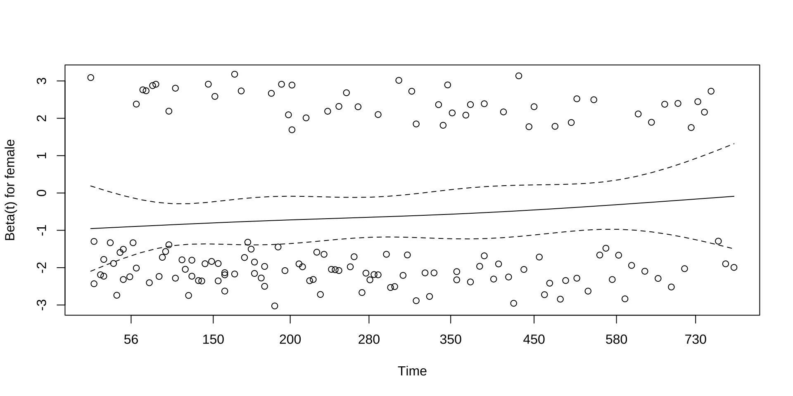
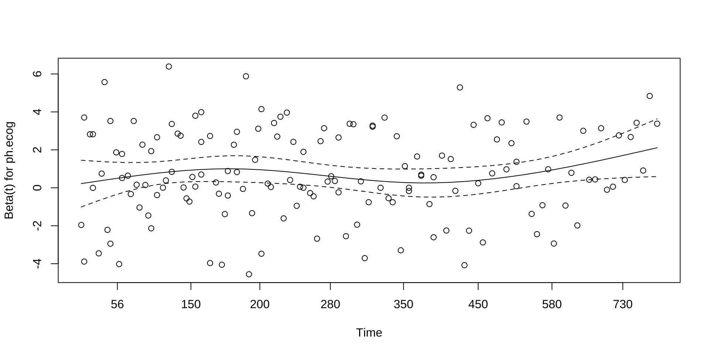
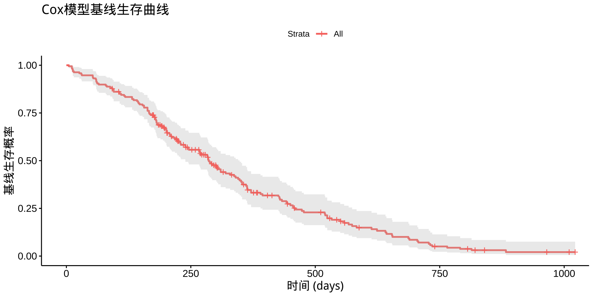
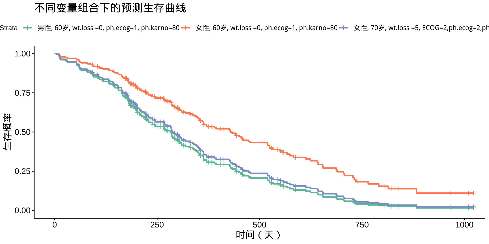
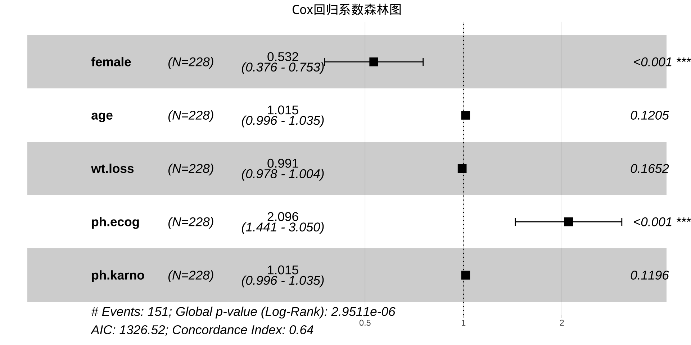
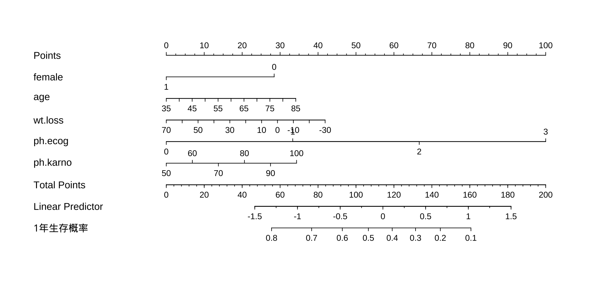
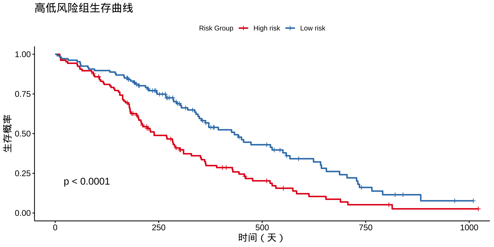

2025-07-16
4.1 Cox模型简介
4.2 Cox模型的数据结构
4.3 Cox模型的估计
4.4 Cox模型的检验
4.5 Cox模型的可视化
Cox比例风险模型（Cox Proportional Hazards Model, 简称CoxPH）是生存分析中最常用的统计方法之一。
\[ h(t|X) = h_0(t) \exp(\beta^T X) \]
\[ h(t|X) = h_0(t) \exp(\beta^T X) \] \[ h(t | X) = h_0(t) \cdot \exp(\beta_1 x_1 + \beta_2 x_2 + \dots + \beta_p x_p) \] \[ \log h(t|X) = \log h_0(t) + \beta_1 x_1 + \beta_2 x_2 + \dots + \beta_p x_p \]
\(h(t|X)\)：时刻 \(t\) 的瞬时风险
\(h_0(t)\)：基线风险
\(x_1, x_2, \ldots, x_p\)：协变量(解释变量)
\(\beta\)代表该变量每增加一个单位时，\(\log\)风险比的改变。
对于预测变量，\(\exp(\beta)\)为“风险比”（Hazard Ratio）：
Cox模型围绕风险函数建模，是因为风险函数能自然处理删失数据、便于推导似然函数、模型解释直观、无需假定基线风险\(h_0(t)\)分布。
Cox模型的风险函数公式： \[ h(t|X) = h_0(t)\exp(\beta^T X) \]
\[ S(t|X) = \exp\left(-\int_0^t h(u|X) du\right) \]
将 \(h(t|X) = h_0(t) \exp(\beta^T X)\) 代入上式：
\[ S(t|X) = \exp\left(-\int_0^t h_0(u) \exp(\beta^T X) du\right) \]
注意 \(\exp(\beta^T X)\) 对于特定个体是常数，可以提到积分符号外：
\[ S(t|X) = \exp\left(-\exp(\beta^T X) \int_0^t h_0(u) du\right) \]
定义基线生存函数（当 \(X=0\)）：
\[ S_0(t) = \exp\left(-\int_0^t h_0(u) du\right) \]
将基线生存函数带入，得到：
\[ S(t|X) = [S_0(t)]^{\exp(\beta^T X)} = \exp\left( -\exp(\beta^T X) \int_0^t h_0(u) du \right) \]
模型估计形式：
| 模型 | 参数类型 | 是否建模 ( h_0(t) ) | 是否允许协变量 |
|---|---|---|---|
| Kaplan-Meier | 非参数 | ❌ | ❌ |
| Cox 模型 | 半参数 | ❌ | ✅ |
| AFT 模型 | 参数 | ✅（如 Weibull） | ✅ |
| 检查点 | 推荐标准 |
|---|---|
| 是否有足够事件？ | 每个解释变量 (predictor) 至少需要 10 个发生的事件（status = 1） |
| 样本删失比例不宜过高 | status = 1 的比例 ≥ 30% 最佳 |
| 变量是否有严重缺失？ | 不推荐变量缺失率 > 15% |
| 是否满足比例风险？ | 拟合后需检验（如 Schoenfeld 残差） |
Vittinghoff, E., & McCulloch, C. E. (2007). Relaxing the rule of ten events per variable in logistic and Cox regression. American Journal of Epidemiology.
inst：医疗机构编号
time：生存时间（天）
status：生存状态。1 = 删失（censored），2 = 死亡（event
age：年龄（岁）
sex：性别, 1 = 男，2 = 女
ph.ecog：ECOG（医生评估的体能评分），评分从 0（无症状）到 4（卧床）
ph.karno：医生评估Karnofsky评分, 0–100, 数值越高表示功能越好
pat.karno：患者评估Karnofsky评分
meal.cal：每餐摄入热量 (calories)
wt.loss：最近 6个月内体重下降的数值(磅)
Loprinzi, Charles Lawrence, et al. “Prospective evaluation of prognostic variables from patient-completed questionnaires. North Central Cancer Treatment Group.” Journal of Clinical Oncology 12.3 (1994): 601–607.
R语言中，Cox比例风险模型的核心函数是 survival::coxph()，它用于拟合 Cox 模型。
coxph(Surv(time, status) ~ covariates, data = dataset)
Surv(time, status) 创建生存对象，包含生存时间和生存状态。
covariates 是一个或多个解释变量，可以是连续型或分类型。
Cox模型的数学形式如下：
\[ \log h(t|x) = \log h_0(t) + \beta_1 x_1 + \beta_2 x_2 + \cdots + \beta_p x_p \]
coef
\[ h(t | X) = h_0(t) \cdot \exp(\beta_1 x_1 + \beta_2 x_2 + \dots + \beta_p x_p) \]
exp(coef)
-\(\exp(\beta)\)，表示 \(x_p\) 增加1个单位时，事件发生的风险(即刻发生该事件的瞬时速率) \(h(t|x)\) 的相对变化倍数。 (_p) 表示风险增加, (_p) < 1$ 表示风险降低。
\[ Hazard \space Ratio = \exp(\beta_p) \]
正系数 → 风险增加
负系数 → 风险降低
Call:
coxph(formula = Surv(time, status) ~ female + age + wt.loss +
ph.ecog + ph.karno, data = lung)
coef exp(coef) se(coef) z p
female -0.631422 0.531835 0.177134 -3.565 0.000364
age 0.015157 1.015273 0.009763 1.553 0.120538
wt.loss -0.009298 0.990745 0.006699 -1.388 0.165168
ph.ecog 0.740204 2.096364 0.191332 3.869 0.000109
ph.karno 0.015251 1.015368 0.009797 1.557 0.119553
Likelihood ratio test=33.53 on 5 df, p=2.951e-06
n= 213, number of events= 151
(15 observations deleted due to missingness)主要变量详细解读
female：女性与男性相比，死亡风险约为男性的0.53（降低47%），且差异高度显著（p < 0.001）。
age：年龄对风险影响不显著（p > 0.05）。
wt.loss：体重下降对风险影响不显著。
ph.ecog（体能评分）：评分每增加1分，风险增加约2倍（HR=2.10），且高度显著（p < 0.001），说明体能状况差的人死亡风险更高。
ph.karno（Karnofsky评分）：ph.karno对风险影响不显著。
Likelihood ratio test（似然比检验）：用于判断整个模型是否显著优于无解释变量（空模型）。 统计量=33.53，自由度（df）=5（模型中有5个自变量）。 p=2.951e-06（约0.000003）极小，远小于0.05。 解释：至少有一个变量对生存时间有显著影响，模型整体是有统计学意义的。
Call:
coxph(formula = Surv(time, status) ~ female + age + wt.loss +
ph.ecog + ph.karno, data = lung)
n= 213, number of events= 151
(15 observations deleted due to missingness)
coef exp(coef) se(coef) z Pr(>|z|)
female -0.631422 0.531835 0.177134 -3.565 0.000364 ***
age 0.015157 1.015273 0.009763 1.553 0.120538
wt.loss -0.009298 0.990745 0.006699 -1.388 0.165168
ph.ecog 0.740204 2.096364 0.191332 3.869 0.000109 ***
ph.karno 0.015251 1.015368 0.009797 1.557 0.119553
---
Signif. codes: 0 '***' 0.001 '**' 0.01 '*' 0.05 '.' 0.1 ' ' 1
exp(coef) exp(-coef) lower .95 upper .95
female 0.5318 1.8803 0.3758 0.7526
age 1.0153 0.9850 0.9960 1.0349
wt.loss 0.9907 1.0093 0.9778 1.0038
ph.ecog 2.0964 0.4770 1.4408 3.0502
ph.karno 1.0154 0.9849 0.9961 1.0351
Concordance= 0.64 (se = 0.026 )
Likelihood ratio test= 33.53 on 5 df, p=3e-06
Wald test = 32.27 on 5 df, p=5e-06
Score (logrank) test = 32.83 on 5 df, p=4e-06Concordance（一致性指数，也叫C-index）是衡量模型区分能力的指标，范围0~1。0.5 表示模型无辨别力（和随机一样），1 表示预测完全正确。
Likelihood ratio test似然比检验，p-value < 0.05, 模型整体显著。
Wald检验，p-value < 0.05, 模型整体显著。
Score test（也叫logrank检验），p-value < 0.05, 模型整体显著。
chisq df p
female 2.059 1 0.151
age 0.186 1 0.666
wt.loss 0.110 1 0.740
ph.ecog 1.359 1 0.244
ph.karno 4.916 1 0.027
GLOBAL 7.174 5 0.208Schoenfeld残差检验的结果
chisq：Schoenfeld残差检验的卡方统计量, df：自由度
对于每个变量及全局（GLOBAL），p值越大于0.05，说明风险比例假定越成立；若p值小于0.05，说明该变量（或整体）可能不满足风险比例假定。
GLOBAL表示对整个Cox模型的风险比例假定整体检验，也叫“全局检验”。它的p值反映了所有协变量加在一起时，模型整体是否违反了风险比例假定。
如果GLOBAL的p值较大（通常>0.05），说明整体上Cox模型的风险比例假定是成立的。


library(gtsummary)
data(cancer, package = "survival")
lung <-
lung %>%
mutate(
status = recode(status, `1` = 0, `2` = 1),
female = recode(sex, `1` = 0, `2` = 1))
# 拟合模型
model1 <- coxph(Surv(time, status) ~ female + age + wt.loss, data = lung)
model2 <- coxph(Surv(time, status) ~ female + age + wt.loss + ph.ecog + ph.karno, data = lung)
tbl1 <- tbl_regression(
model1,
exponentiate = TRUE,
estimate_fun = function(x) style_number(x, digits = 3)
)
tbl2 <- tbl_regression(
model2,
exponentiate = TRUE,
estimate_fun = function(x) style_number(x, digits = 3)
)
tbl_merge(
tbls = list(tbl1, tbl2),
tab_spanner = c("**Model 1**", "**Model 2**")
)| Characteristic |
Model 1
|
Model 2
|
||||
|---|---|---|---|---|---|---|
| HR | 95% CI | p-value | HR | 95% CI | p-value | |
| female | 0.594 | 0.422, 0.836 | 0.003 | 0.532 | 0.376, 0.753 | <0.001 |
| age | 1.020 | 1.001, 1.040 | 0.038 | 1.015 | 0.996, 1.035 | 0.12 |
| wt.loss | 1.001 | 0.989, 1.013 | >0.9 | 0.991 | 0.978, 1.004 | 0.2 |
| ph.ecog | 2.096 | 1.441, 3.050 | <0.001 | |||
| ph.karno | 1.015 | 0.996, 1.035 | 0.12 | |||
| Abbreviations: CI = Confidence Interval, HR = Hazard Ratio | ||||||
tbl_combined <- tbl_merge(
tbls = list(tbl1, tbl2),
tab_spanner = c("**Model 1**", "**Model 2**")
)
library(flextable)
library(officer)
read_docx() %>%
body_add_par("Table 2. Results of Cox Proportional Hazards Regression Models") %>%
body_add_flextable(as_flex_table(tbl_combined)) %>%
print(target = "cox_results.docx")基线生存曲线: 在所有协变量（自变量）取基线值时（通常是0，或者参考组），个体在各时间点的生存概率。
\[ S_0(t) = \exp\left(-\int_0^t h_0(u) du\right) \]
基线生存曲线是所有预测型生存曲线的“原型”或“起点”，其它所有人的生存曲线都是在它的基础上根据风险因子调整得到的。
描述“标准人群”（参考组）或“平均水平”个体的生存情况。，在现实中确实可能并不存在（比如所有变量都取0或参考组值，这个人其实不在你的样本里）。但它依然有重要的统计与实际意义，参考组本质是“数学基准”，不是现实个体, 即使现实中没有这样的人，所有其他个体的生存概率都必须以它为基准来调整。
绘制基线生存曲线

newdata <- data.frame(
female = c(0, 1, 1),
age = c(60, 60, 70),
wt.loss = c(0, 0, 5),
ph.ecog = c(1, 1, 2),
ph.karno = c(80, 80, 60)
)
sf <- survfit(fit, newdata = newdata)
library(survminer)
ggsurvplot(
sf,
data = lung,
conf.int = FALSE,
legend.labs = c("男性, 60岁, wt.loss =0, ph.ecog=1, ph.karno=80",
"女性, 60岁, wt.loss =0, ph.ecog=1, ph.karno=80",
"女性, 70岁, wt.loss =5, ECOG=2,ph.ecog=2,ph.karno=80" ),
palette = "Set2", # 使用RColorBrewer的 Set2 调色板
title = "不同变量组合下的预测生存曲线",
xlab = "时间（天）",
ylab = "生存概率"
)

列线图（Nomogram）是将回归模型（如Cox、Logistic回归）转化为可视化评分表的工具，用于临床个体化预测。它把每个变量的取值转换为分数，然后通过总分推算某一结局（如1年生存率）。
把模型变成“分数表”，你只需查分、加分、对照即可得到个体预测概率。
一张列线图的结构一般包括： - 最上方一行：Points（得分）
这是一把“定标尺”，用于查每个变量取值对应的分数。
中间多行：各个变量
每个变量一行，旁边有对应取值的刻度线。
把所有变量的分数加起来，落在这一行的某个位置。
底部：预测概率（如1年生存率）
总分可以对应到一个概率，比如“1年生存率”
#install.packages("rms")
library(rms)
dd <- datadist(lung)
options(datadist="dd")
# 用cph拟合
fit <- cph(Surv(time, status) ~ female + age + wt.loss + ph.ecog + ph.karno, data = lung, x = TRUE, y = TRUE, surv = TRUE)
surv <- Survival(fit)
nom <- nomogram(fit, fun=list(function(x) surv(365, x)), funlabel="1年生存概率")
plot(nom)
使用 Cox 比例风险模型对病人进行风险分层后，高低风险组的Kaplan-Meier 生存曲线。你使用了 predict(fit, type = “lp”) 计算每位患者的风险评分（线性预测值），然后基于中位数将样本分为高风险组与低风险组。
在Cox回归生存分析中，高风险组（High risk group）是指： 对每个患者（样本），根据Cox回归模型计算出其风险评分（risk score，通常就是线性预测得分：risk_score = β1×X1 + β2×X2 + … + βn×Xn）。 然后，通常以风险评分的中位数为阈值，大于中位数的分为“高风险组”，小于等于中位数的分为“低风险组”。
显著生存差异：红色曲线（高风险组）与蓝色曲线（低风险组）之间差距明显，p 值远小于 0.05，说明模型能有效区分不同风险个体的生存预后。
模型有较好判别力：高低风险组的生存曲线没有交叉，且间距较大，说明 Cox 模型捕捉到了关键影响因素。
删失信息充分：小“+”符号分布均匀，说明删失数据处理得当，未引起偏倚。
# 步骤1: 计算风险评分
risk_score <- predict(fit, type = "lp") # "lp" = linear predictor
# 步骤2: 分组（以中位数为界）
lung$risk_group <- ifelse(risk_score > median(risk_score, na.rm = TRUE),
"High risk", "Low risk")
# 步骤3: 拟合分组生存曲线
fit_group <- survfit(Surv(time, status) ~ risk_group,
data = lung)
# 步骤4: 绘制生存曲线
ggsurvplot(
fit_group,
data = lung,
pval = TRUE, # 显示log-rank检验p值
legend.title = "Risk Group",
legend.labs = c("High risk", "Low risk"),
palette = c("#E41A1C", "#377EB8"), # 红、蓝
xlab = "时间（天）",
ylab = "生存概率",
title = "高低风险组生存曲线"
)
coxph()建模，配合森林图、风险分层生存曲线、列线图等可视化。推荐R包：survival、ggsurvfit、gtsummary、survminer、rms
https://lizongzhang.github.io/survival
© 2025 2025 医咖会 Li Zongzhang